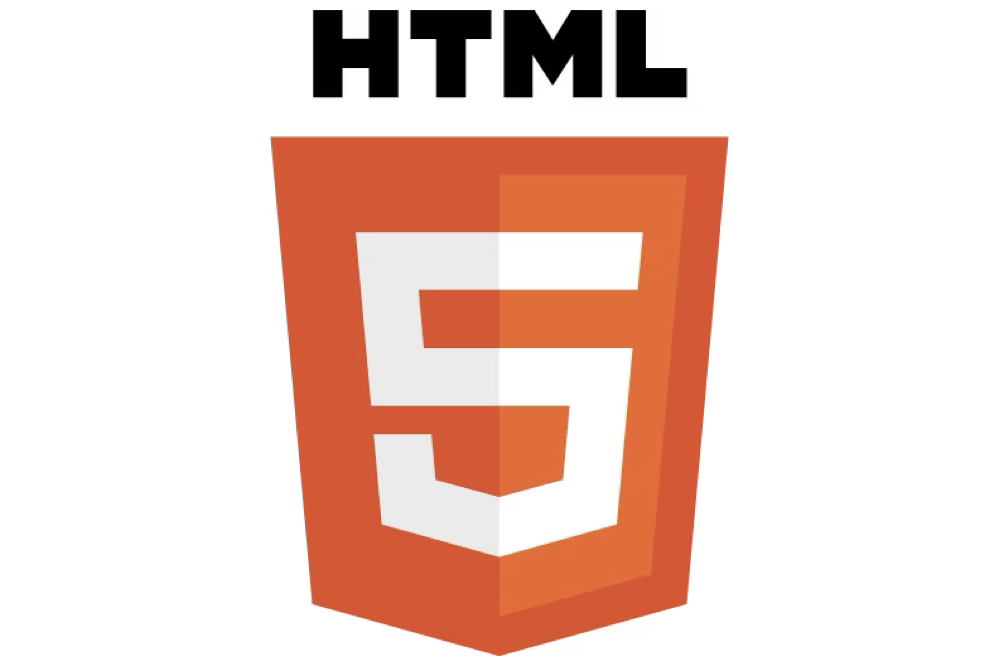

2025/06/14
ブログのデザインを変更しました

当サイトは、HTML, CSS で自分で作成したデザインを使用しているのですが、サイトのデザインを大きく変えてみました。理由としては、余計な機能を外して、コンテンツに集中して読んでもらえるようにするためです。以前はタイトルのフォントなどを無駄に凝っていたのですが、それらを省いてシンプルなデザインにしてみました。現在サイトを公開してから２週間程度経っており、Google アナリティクスや Amazon アソシエイトなどの試験が大体終わったので、今後は質の高いコンテンツを作成することを目標にやっていくつもり。できれば１週間に１回くらいは更新できるといいなと思っています。
現時点でアナリティクスを見てみると、自分がテストのためにページを開いた以外ではほとんど誰も見てないんじゃないかって感じです。もし今後、何かのご縁があってこのページを他の人が見てくれる機会があったら、少しは役にたつコンテンツを提供できるようにしたいって思います。
HTML5＆CSS3デザイン
static なホームページを作成するのに必要な知識が身につく本です。コンテンツモデルや各ブラウザの対応についても丁寧に記述されています。